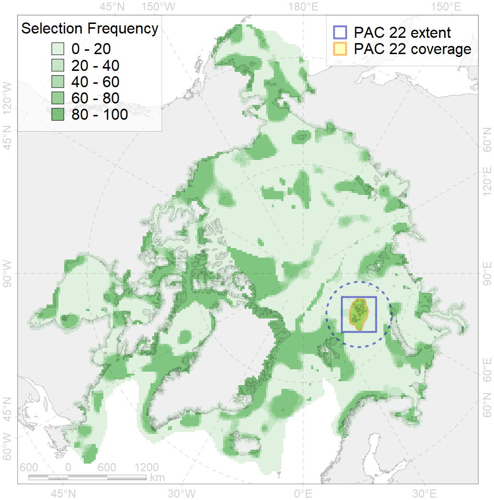
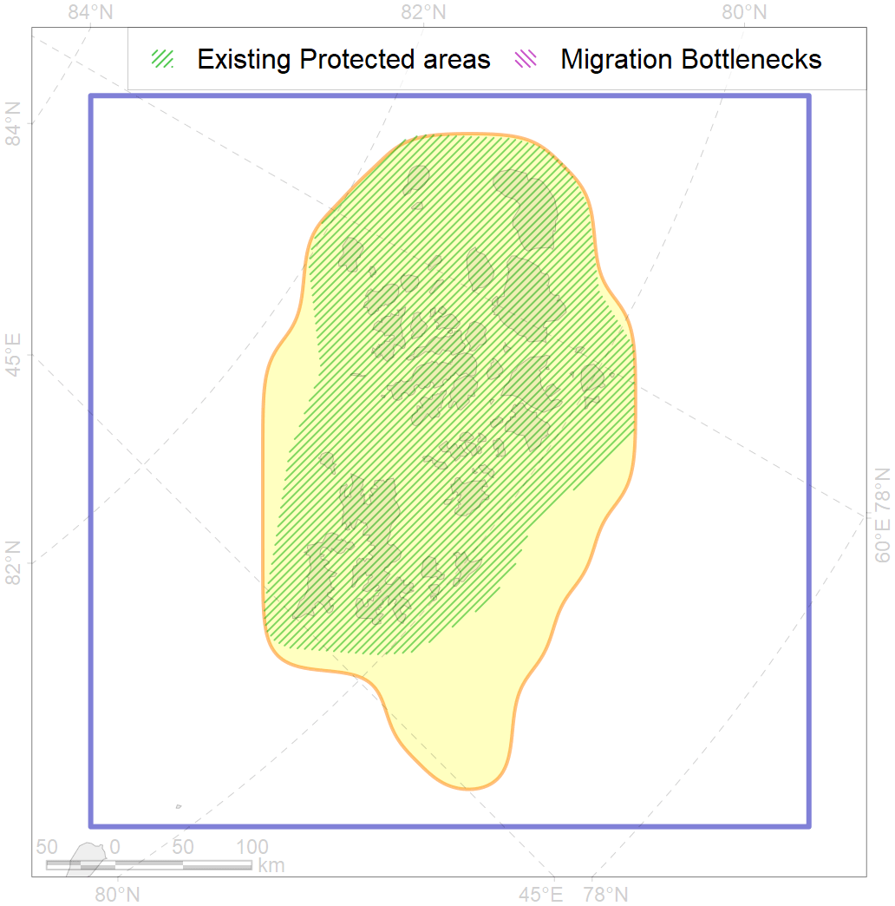

22
For more information regarding this PAC and to conduct custom spatial analysis using the PAC data or any spatial query, please consult Accenter.

4
CFs entirely within the PAC area
18
CFs at least 25% within the PAC area
22
CFs with at least 50% of their target achieved in the PAC
28
CFs with at least half of their target achieved in the PAC
| CF ID | CF Name | Proportion in the PAC | Conservation Target | Contribution to ArcNet Target Achievement | PAC’s Contribution to the Achieved Target |
|---|---|---|---|---|---|
| 6053 | Common eider (Somateria mollissima borealis) FJL breeding&moulting grounds | 100.0% | 55.2% | 181.1% | 100.0% |
| 5079 | Narwhal Frants Joseph Land stock core distribution | 100.0% | 72.0% | 138.9% | 100.0% |
| 8039 | Franz Josef Land glacial termini | 100.0% | 30.0% | 333.3% | 100.0% |
| 3001 | Fast Ice distribution in the FJL region | 100.0% | 6.0% | 1666.7% | 100.0% |
| 5023 | Beluga of the Frants Joseph Land stock distribution | 99.8% | 18.0% | 554.3% | 100.0% |
| 5080 | Narwhal Frants Joseph Land stock summer distribution | 99.5% | 48.0% | 206.6% | 99.9% |
| 3113 | Polynyas distribution in the Franz Josef Land region | 92.4% | 12.0% | 757.6% | 97.5% |
| 2046 | Ringed seal whelping areas in the FJL region | 92.2% | 9.0% | 1010.0% | 97.7% |
| 6037 | Ivory gull (Pagophila eburnea) FJL breeding colonies | 86.4% | 64.8% | 133.3% | 99.4% |
| 7253 | FJL Bank | 80.2% | 70.0% | 111.7% | 96.0% |
| 7219 | Franz Josef Land kelp patches (15-19) | 80.0% | 30.0% | 266.7% | 99.0% |
| 6003 | Little Auk (Alle alle polaris) breeding colonies | 79.8% | 54.0% | 147.7% | 82.5% |
| 9038 | polar bear denning areas of BS (Barents Sea) subpopulation | 65.0% | 52.8% | 123.2% | 78.8% |
| 7074 | I.1.3.2. Archipelago straits and coastal waters | 57.4% | 9.3% | 596.7% | 90.3% |
| 6096 | Ivory gull (Pagophila eburnea) FJL breeding colonies buffer feeding area | 50.2% | 43.2% | 112.3% | 89.6% |
| 6089 | Little Auk (Alle alle polaris) breeding colonies buffer feeding area | 38.0% | 36.0% | 100.8% | 59.2% |
| 6009 | Brent goose (Branta bernicla hrota) Greenland, Svalbard and FJL breeding&moulting grounds | 34.0% | 18.0% | 188.8% | 35.0% |
| 3037 | Marginal Ice Zone distribution in July in the Barents Sea LME | 25.1% | 24.0% | 103.4% | 34.6% |
| 6028 | Glaucous gull (Larus hyperboreus hyperboreus) breeding grounds | 24.1% | 12.0% | 200.6% | 31.6% |
| 1005 | Atlantic Walrus Winter Distribution in Spitsbergen and FJL region | 21.8% | 27.6% | 77.3% | 29.9% |
| 7041 | South-eastern Barents - White Sea transitional zone | 21.7% | 12.6% | 165.1% | 53.6% |
| 1006 | Atlantic Walrus Summer Distribution in Spitsbergen and FJL region | 18.8% | 27.6% | 66.0% | 35.6% |
| 1008 | Atlantic Walrus haulouts in Spitsbergen and FJL region | 18.0% | 82.8% | 21.8% | 18.8% |
| 9003 | polar bear of the BS (Barents Sea) subpopulation distribution | 16.5% | 26.4% | 60.8% | 29.6% |
| 5045 | Bowhead whale of the Spitsbergen population core distribution | 8.4% | 74.4% | 10.9% | 10.9% |
| 6040 | Ivory gull (Pagophila eburnea) postbreeding grounds in the Barents and the Kara Sea | 7.8% | 21.6% | 34.7% | 16.3% |
| 4038 | Feeding area of the Polar cod in the Barents Sea | 6.9% | 24.0% | 27.6% | 19.9% |
| 6106 | Thick-billed murre (Uria lomvia lomvia) breeding colonies buffer feeding area | 6.0% | 48.0% | 11.9% | 8.7% |
| 5090 | Narwhal in the Russian Arctic assumed summer range | 5.9% | 12.0% | 47.9% | 27.7% |
| 6082 | Thick-billed murre (Uria lomvia lomvia) breeding colonies | 5.5% | 72.0% | 7.6% | 6.5% |
| 6099 | Black-legged kittiwake (Rissa tridactyla tridactyla) breeding colonies buffer feeding area | 5.0% | 64.8% | 7.3% | 7.3% |
| 6015 | Black guillemot (Cepphus grylle mandti) breeding grounds | 4.8% | 12.0% | 39.7% | 8.5% |
| 3055 | Multiyear Ice distribution in September in the Barents Sea LME | 4.7% | 18.0% | 25.9% | 8.6% |
| 7066 | I.1.1.3. Shelf plains | 4.5% | 3.7% | 121.2% | 10.0% |
| 3026 | Marginal Ice Zone distribution in April in the Barents Sea LME | 4.4% | 12.0% | 35.3% | 8.4% |
| 7265 | Barents and Kara Sea Throughs | 4.3% | 4.2% | 92.2% | 32.0% |
| 7067 | I.1.1.4. Shelf troughs | 4.3% | 3.0% | 133.3% | 21.4% |
| 4076 | Fish zoogeography, Arctic Region, High-Arctic Shelf Province, N Barents – Kara-Sea District | 4.0% | 7.1% | 54.1% | 14.0% |
| 7068 | I.1.1.5.1. Shallow ( < 100 m) shelf banks | 3.7% | 9.3% | 38.8% | 5.5% |
| 5112 | Arctic Cetaceans (beluga, bowhead, narwhal) winter habitats as predicterd by MIZ | 2.6% | 40.0% | 6.2% | 5.1% |
| 4001 | Arctic fish complex of the Barents region | 2.1% | 6.0% | 30.3% | 5.5% |
| 5046 | Bowhead whale of the Spitsbergen population home range | 2.0% | 18.6% | 10.2% | 10.2% |
| 3056 | Multiyear Ice distribution in September in the Kara Sea LME | 1.5% | 18.0% | 8.4% | 6.5% |